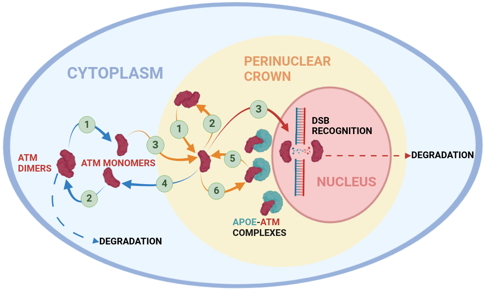
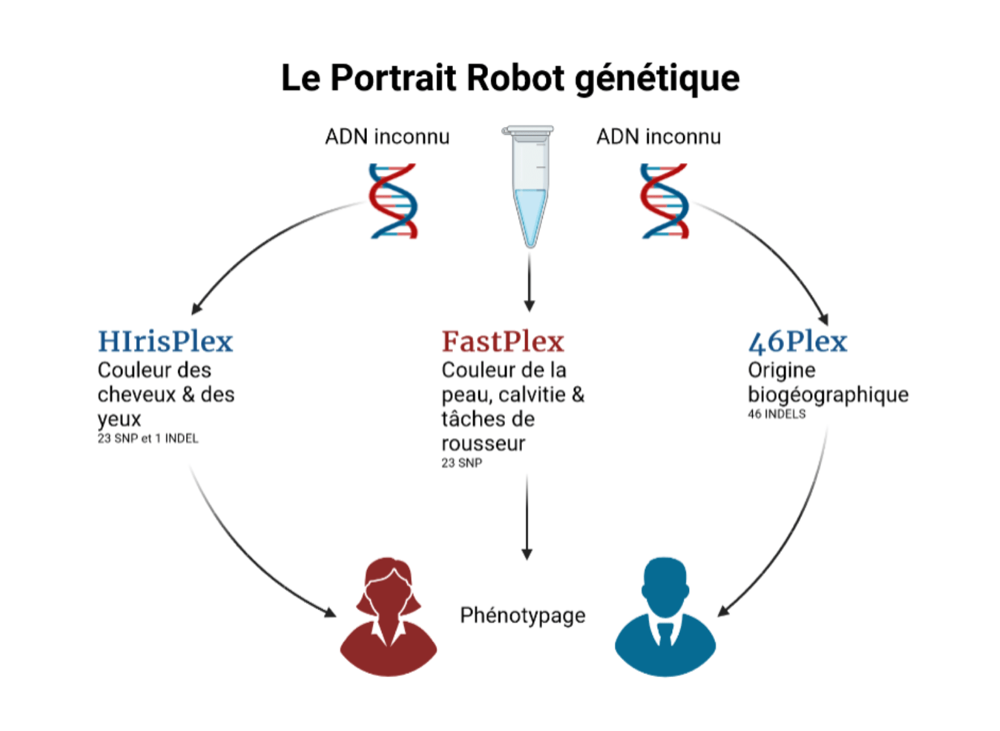
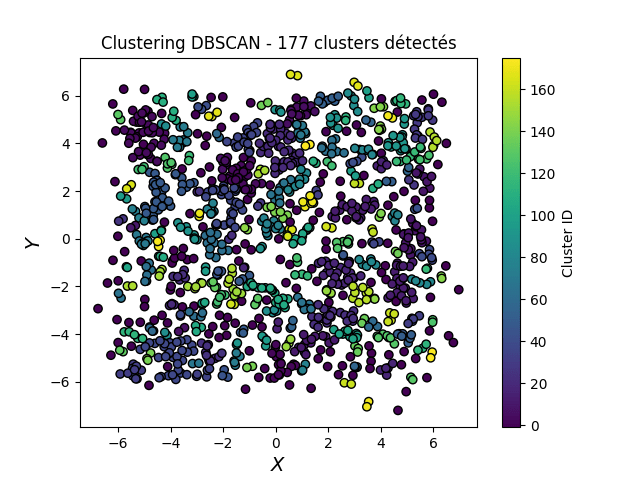

Modélisation des protéines impliquées dans la maladie d'Alzheihmer

Amélioration du portrait robot génétique au Laboratoire de la Police Scientifique

Apprentissage par renforcement guidé par LLM pour mimer l'intelligence humaine

Modélisation probabiliste d'écosystèmes semi-arides et émergence de structures spatiales